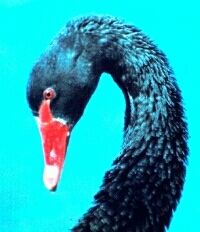

Friday, June the 3rd, 2005
back to: title, date or indexes
The item about swans on Tuesday 31st May, in which I referred to the swan-eating proclivities of Peter Maxwell Davies, led me to ponder whether I could interest a mainstream publisher in a book entitled The Bird-Based Diets Of Twentieth Century Composers. (I know that sounds like one of Dobson's pamphlets, but I checked, and it is—surprisingly, perhaps—a topic he never addressed.)
I jotted down a few notes (Berio—partridge, Havergal Brian—reed warbler, Berg—grebe) but my pea-sized yet pulsating brain was drawn back to swans by that indefatigable correspondent Glyn Webster, who sent this:
“When I was a toddler my parents used to amuse themselves by taking me to the Rotorua lake front to feed the Satanic Black Swans. These swans are not the white, regal, placid creatures I'd been shown in my storybooks. They are black, greasy, violent creatures that smell of sulphurous lake mud. The expression in their glowing red eyes switches from vacant, narcissistic insanity to envious hatred the instant they are offered food.
“In a shoebox somewhere is a Super 8 film reel of me weeping in terror, running and stumbling in my nylon parka and Crackerjack® gumboots while a dozen of these evil beasts waddle after me lunging after the lump of bread I'd forgotten to drop in my panic. I seem to remember all my early visits to the lake ending that way.”

A black swan : greasy, violent & sulphurous.